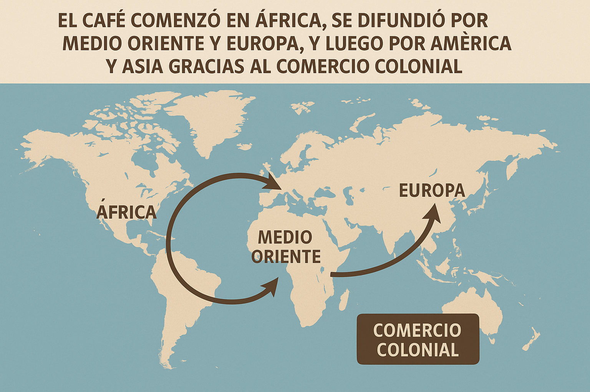
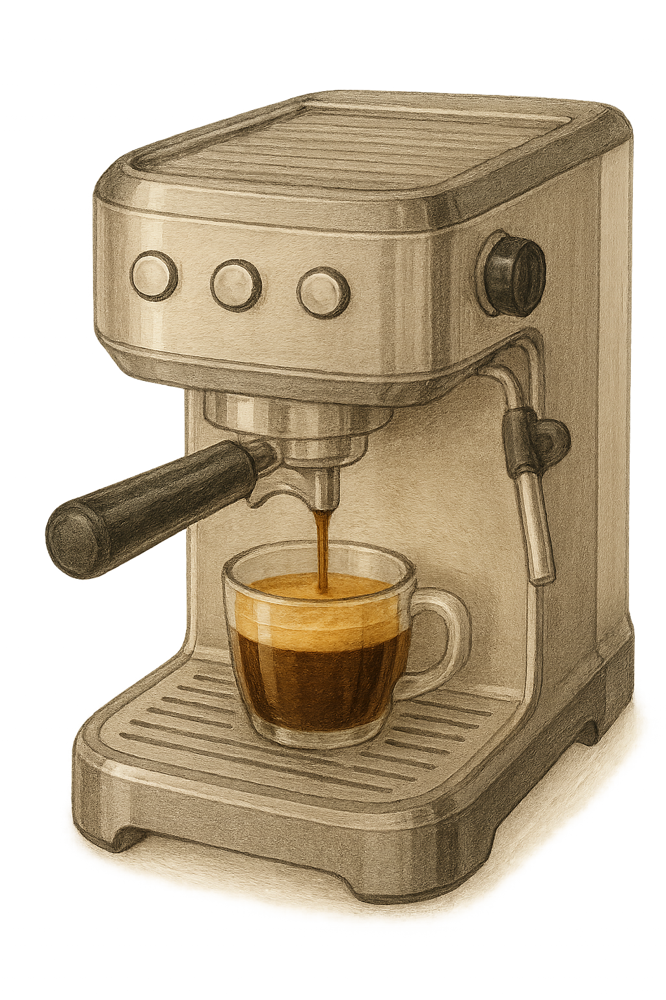
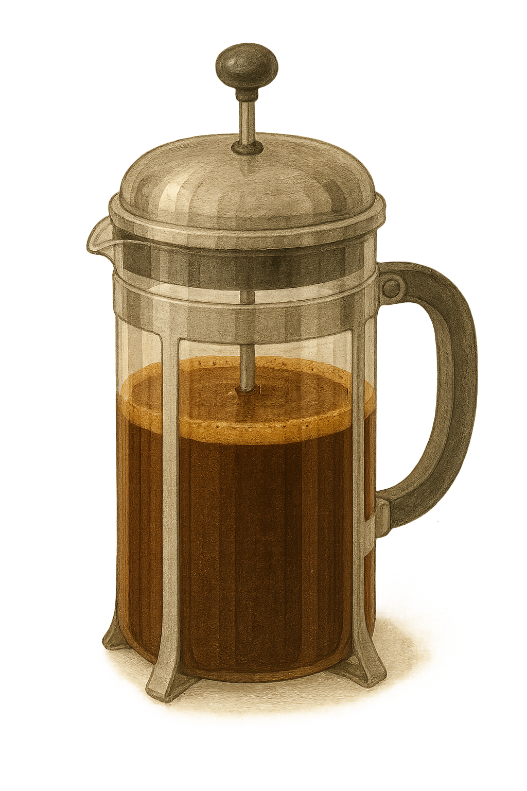
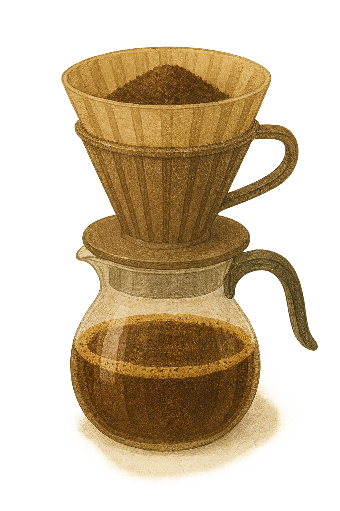

Historia del Café
Cronología
- Siglo IX: Descubrimiento en Etiopía, según la leyenda de Kaldi y sus cabras.
- Siglo XV: Expansión por el mundo islámico, popular en Yemen.
- Siglo XVII: Llega a Europa y se abren las primeras cafeterías.
- Siglo XVIII: Cultivos en América y Asia, el café se globaliza.
- Actualidad: Segunda bebida más consumida del mundo.
Expansión Global

Datos Curiosos
- El primer país productor de café actualmente es Brasil.
- En Viena, las cafeterías fueron declaradas patrimonio cultural.
- El café descafeinado fue creado por accidente en 1905.
- Beethoven contaba exactamente 60 granos de café por taza.
Evolución de los Métodos de Preparación

Espresso
Desarrollado en Italia en el siglo XX, base de muchas bebidas modernas.

Prensa Francesa
Inventada en Francia en el siglo XIX, permite un sabor intenso y natural.

Filtro por Goteo
Método moderno y popular en oficinas y hogares por su practicidad.